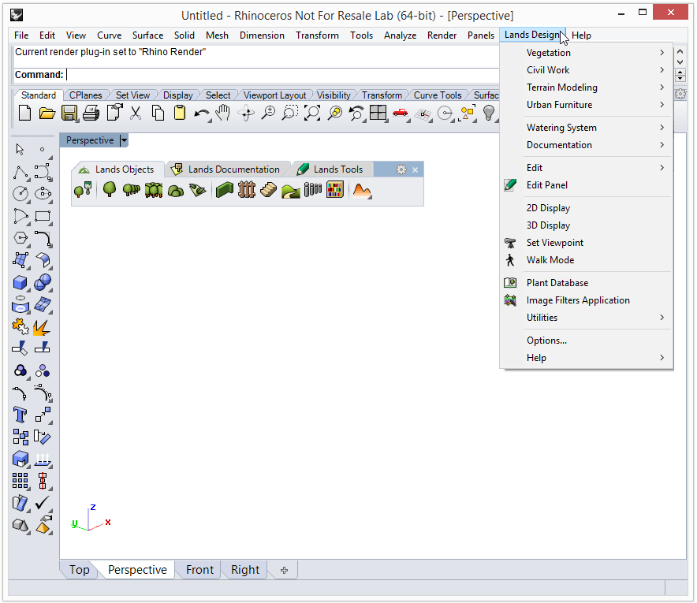

Most of the application commands are organized in the Lands Design drop-down menu. All Lands Design objects and tools found in the toolbars are displayed with their corresponding options.

Lands Design drop-down menu.
NOTE: The drop-down menu should appear when Lands Design is loaded in the current Rhino session after installing Lands Design. If it does not appear, type Toolbar on the command line and open the Lands Design.rui file, which is located in the following directory: